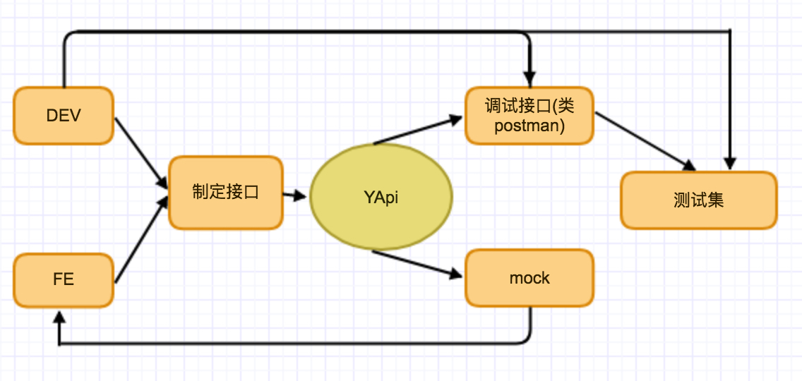

快速开始 #
1 接口管理架构 #
平台以项目分组 -> 项目 -> 接口的划分进行接口组织管理。

1.1 项目分组 #
登录之后进到项目首页，左边侧边栏显示的即分组列表。

管理员有权限添加或删除分组。

分组名称具有唯一性
1.2 项目 #
选中不同的分组，右边会显示该分组下的项目列表。

创建项目需要填写项目名称，项目线上域名（添加完成后可配置项目其他环境域名），项目接口基本路径（接口路径前面相同的部分）以及项目描述。

项目『线上域名 + 基本路径』具有唯一性
1.3 接口 #
点击项目名称，进入该项目接口列表。

点击编辑，进入接口详情页（之后接口详情页和编辑也会分开），可以编辑接口或者请求测试真实接口。